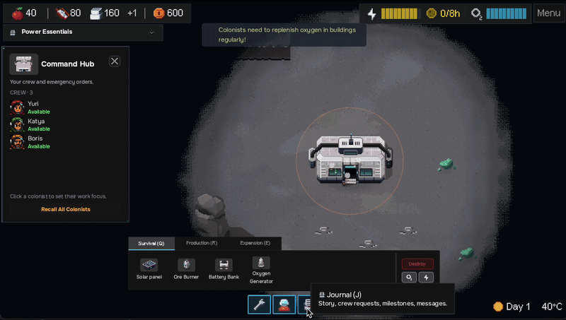
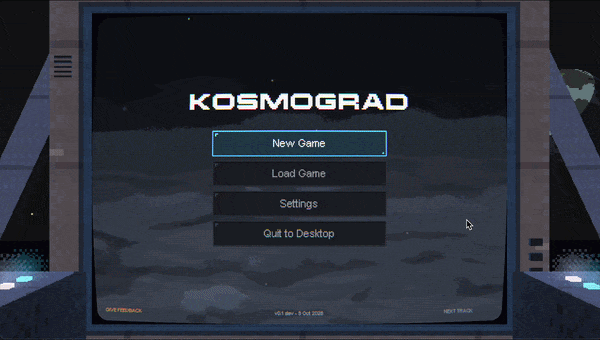
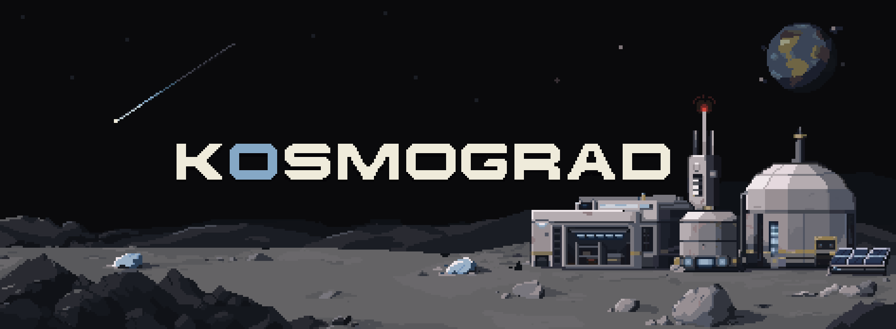

01Takeaways
What I'd bring to a product team
-
Trace, then rank
A backlog of symptoms overstates the work. One root cause accounted for three complaints, and it only showed up because I investigated before estimating.
-
Weigh evidence
A three-minute session and a full playthrough are not the same data point. I log signal quality next to the feedback and let weak signals become watch items.
-
Cutting is design
The Journal got better when I removed a duplicate entry point, an oversized card, two extra names and a filter. Most of the clarity came from what left.
02Overview
The product, and my part in it
Kosmograd is a colony sim for people who like their survival games small and tense.
I build it alone, so it's where I practise the whole product cycle end to end: discovery, prioritisation, design, delivery and launch.
I own the roadmap, the playtest programme, the UX and the pixel art. The code is Godot 4 and GDScript, built with Claude Code as an engineering partner: I set direction and acceptance criteria, it works in small batches, and I test and own every call.
The game's pitch, in three lines
-
Survive the moon
Keep a tiny colony alive through oxygen shortages, power failures, scarce resources and brutal lunar storms.
-
Build a living outpost
Design and automate a self-sufficient Soviet-inspired moon base, from basic survival systems to advanced production.
-
Every day is a crisis
Balance limited resources, unreliable machinery and unpredictable events, where one failure can cascade into disaster.
As it reads on the game's site.
03The problem
Playtests kept stalling on day 2
First the game was too punishing, then it was too aimless. Both came down to one product problem: players who don't understand a system can't make real choices in it.
Players died on day 1 or 2. Oxygen ran out too fast, power failed before they could react, and the learning curve was brutal. I wanted “harsh but fair” and had built frustration, not tension. I slowed oxygen depletion, added starting buildings that prevent instant death, and gave a little more starting stock.
Now players survived the first night, sorted out food, sat through a storm, and then asked “day 2, now what?” The game had an end goal the whole time. Players just weren't told about it until around day 4, and from day 2 the tracker showed an open-ended side goal instead of the story.
“Survival should never be automatic, but every problem should have a readable, satisfying solution.” The principle I test every feature against
04Discovery and prioritisation
From loose feedback to a ranked plan
I run playtests as think-aloud user tests, transcribe every session, and trace each issue to a root cause before deciding anything. Then I rank by impact on a 10-minute first play, per hour of work, because most testers play exactly once.
I run playtests the way I'd run a usability test, with testers from Discord swap-testing and itch.io.
How I run a playtest, in four steps
-
Prime
Testers get a short brief before they start: record the session and say what you're thinking as you play. I don't explain the game, because the confusion is the data.
-
Transcribe
Every session is transcribed in full, not summarised from memory. A sigh or a “wait, what?” at minute four is easy to forget and often matters more than the written feedback.
-
Synthesise
I go through the transcripts with AI as a second reader. It clusters issues across sessions, drafts a priority order, and flags cues I missed. I check its findings against the recording and make the calls myself.
-
Weigh
Not every session counts the same. A three-minute play with no audio and the tutorial skipped is low-signal: it gave me a fullscreen nudge for web players, but it didn't get to change the design. Anything seen once is a watch item until a second tester hits it.
Then I trace each issue to its root cause, and that changes the plan. For one round before the demo I traced 18 reported symptoms, and some “big” complaints turned out to be one-line bugs. A single fix removed three of them at once: a credits payout on the landing screen, a random crew line before the intro, and a quest that completed itself on frame one.
The plan that came out of that round:
-
Tier 1
Cheap fixes
1–2 daysSmall edits that remove most “this feels broken” moments from the first 10 minutes. Ship to testers straight away.
-
Tier 2
Storm rework
3–5 daysThe demo's only recurring crisis read as “orange screen, random breakage, frozen colonists”. Mechanics first, visuals second.
-
Tier 3
Core UX
2–3 daysCrew management, multi-select, enemy visibility, save prompts and notification throttling.
-
Deferred
Past the demo
LaterHousing and mood, a storyteller system, upgrades, food varieties, custom music. All real design work, none of it demo-blocking.
05UX deep dive
From a flat quest list to a Journal
The fix for “day 2, now what?” was mostly information architecture. A flat quest list became a Journal with one pinned goal, a clear priority order and four tabs, so players always know what matters next.

The old quest log was one list where story steps, optional jobs and long-term achievements all looked the same. What changed:
-
Goal first
The run opens with a mission brief from a mothership in orbit. Its goal, Signal Earth, stays pinned for the whole run with a count of the components you've recovered.
-
One priority rule
The tracker shows the current story chapter first, then urgent events, then optional jobs. Long-term achievements never take it over.
-
Four tabs, four jobs
Story is the main path. Requests holds optional jobs, grouped by the crew member who asked. Milestones pay out and stay quiet. Messages keeps every notification, so nothing is lost.
-
Progressive disclosure
Finished chapters shrink to a ticked line. The current one is a full card, the next shows a one-line teaser, and the rest stay hidden.
-
A human voice
Every quest comes from a person (Yuri, Katya, Boris or the mothership) who asks for it out loud and reacts when it's done.
Four things I cut or reversed
- Story quests on the Requests tab. The same quest showed up in two places. Story now lives on the Story tab only.
- A big goal card. The first version explained all three steps at once and took up half the tab. Now only the current step explains itself.
- Three names for one goal. The tracker, Journal and final chapter each named it differently. It's “Signal Earth” everywhere now.
- A filter for completed quests. With seven chapters, there's nothing to filter.
06Interface trust
Small fixes that make the UI believable
In a survival game, players have to trust the interface to tell them the truth. These are the same patterns I use in B2B products.
Alert fatigue
“LOW OXYGEN!” fired for any colonist outdoors, even at 100%. Players learned to ignore it.
It only fires when oxygen is actually low, and a real low-reserve moment gets a loud warning at 30% and 15%.
Actionable numbers
The ice counter (your air supply) showed a raw amount.
It shows days of air left, turning orange under 3 days and red under 1. A number players can act on.
Explained actions
Right-clicking a broken building did nothing and gave no reason.
A menu shows who will go, what it costs, and who gets pulled off another job. If nobody is free, the option is greyed out and says why.
Agency in a crisis
During storms, colonists just froze in the hub.
Players choose whether the crew shelters or keeps working, trading safety for progress.
07Brand and go-to-market
The first thirty seconds
Most people will meet Kosmograd as a thumbnail on Steam and a main menu. I treat both as product surfaces: they set the tone, and they're where the feedback loop starts.


08What's next
Towards the Steam demo
The Steam demo is planned for January 2027. Until then: full playthroughs of the new Journal and weather systems, and more playtest rounds, each closing the loop with a devlog.